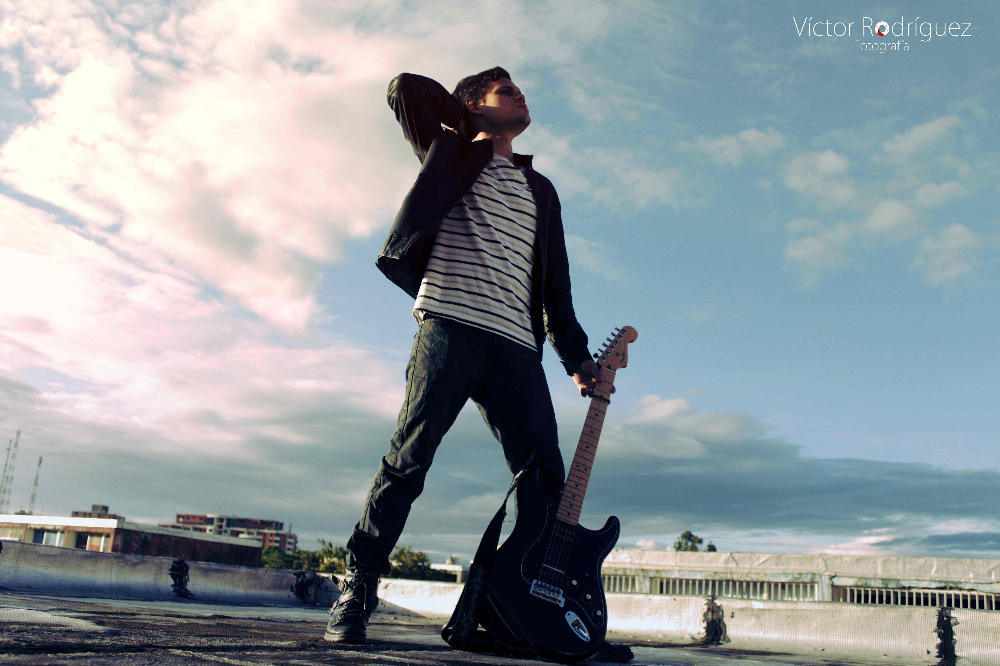
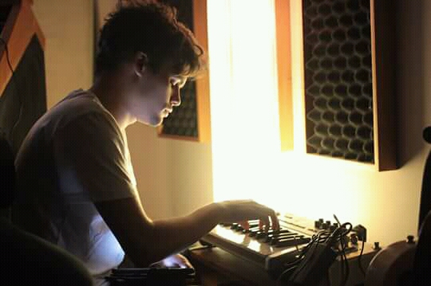

Sobre mí
Ramses Urbina es un musico multinstrumentista, compositor y productor musical radicado en Buenos Aires. Inicia sus estudios de piano a los 9 años de edad de la mano del profesor Carlos Giovanni Valbuena; a los 15 años comienza clases de guitarra electrica con Nestor Moya y esta experiencia le marca profundamente, encaminandolo en el camino del rock; en el año 2008 forma One Nigth Stand junto con Adrian Ghiano en la guitarra, Christian Marin en el bajo y Samuel Duque en la bateria, poco a poco se haciendose un nombre en la escena under del rock pesado venezolano. En 2011 graban su primer EP "Ouroboros", en Audioline studios con la ayuda de Marcos Burgos (ganador del premio Distorxion al mejor Ingeniero de sonido), la mezcla se encontro a cargo de Felipe Gruber (tres veces ganador del premio Distorxion al mejor Ingeniero de sonido). Gracias a su participación en el "Megabandazo" organizado por la Mega 88.9 Fm, logran que su primer single "Sol Metal" entre en rotación radial a nivel nacional, llevándolos a distintos escenarios del oriente del país. Entre sus participaciones en concursos se destaca su tercer lugar en el Viva Rock Latino organizado por Hard Rock Cafe, que se llevo a cabo en la Isla de Margarita.

En el año 2013 se convierte en el representante de la Universidad Catolica Andres Bello (UCAB) nucleo Guayana, para el festival de la Voz UCAB, en la sede principal de esta universidad en Caracas, concurso en el que gana el primer lugar masculino tan solo una semana después con el vals venezolano "Anhelos", convirtiéndose así en el representante de la UCAB para el Festival Nacional de la voz Universitaria. Una vez radicado en Buenos Aires, forma parte entre 2015 y 2017 del Coro del Ministerio de Educación de la Nación, dirigido por el maestro Federico Neimark, desempeñándose ocasionalmente como solista, donde se destaca la presentación en el Salón Blanco Leopoldo Marechal ante la Dra. Jill Biden, en ese momento segunda dama de los EEUU de América. En 2017 inicia sus estudios superiores en Canto Lírico, en el Conservatorio Superior de Musica "Manuel de Falla" con la profesora Silvia Cambiasso, posteriormente forma parte del ensamble de "La Flauta Magica" de Mozart, bajo la dirección de la reconocida maestra Marta Blanco.

Como productor musical colabora con distintas bandas del sur de Venezuela, de quienes destacan Pez Volador, con quien trabaja todo el proceso de pre-produccion de su primer album "Fiesta en el Limbo", grabado en Araya studios, en el año 2014, en la ciudad de Cumana, ademas de la producción Ramses graba guitarras adicionales y background vocals para el proyecto; la version single de su tema "Divago" mezclado por el, les hace ganadores al prestigioso Premio Union Rock Show como artista emergente y le da a Ramses la oportunidad de trabajar en la mezcla del EP, asistiendo a Fidel Goa (ganador del latin grammy 2013 por su participación como ingeniero en el disco "Será" de La Vida Boheme). Ramses ha tenido la oportunidad de colaborar y compartir escenario con diversos artistas de los que destacan, Miguel Siso (ganador del Latin Grammy 2018 a mejor album instrumental), Nene Quintero, Luis Golding (ex bajista de Caramelos de Cianuro), Danny García (guitarrista de Chenoa, Franco de vita, Chenoa, David Bisbal, Laura Pausini, entre otros), Dischord, Rawayana, Americania,Distrust, Arkangel, Intemperia, entre otros.
Ademas de esto, durante los últimos 10 años se desempeña ocasionalmente como compositor para medios audiovisuales, principalmente cortometrajes, también realiza trabajos de edición, mezcla, restauración y limpieza de audio. Su último proyecto musical como productor es Daydreamer de Franco la Rosa, donde trabajó arduamente en todos los niveles de producción, grabación y mezcla de su primer lanzamiento; en el Ramses realiza arreglos musicales, participa en la grabación de voces, guitarras y sintetizadores, su primer single "First Step" se encuentra disponible ya en todas las plataformas digitales y se espera la salida del segundo single "Ink" en otoño de 2022.